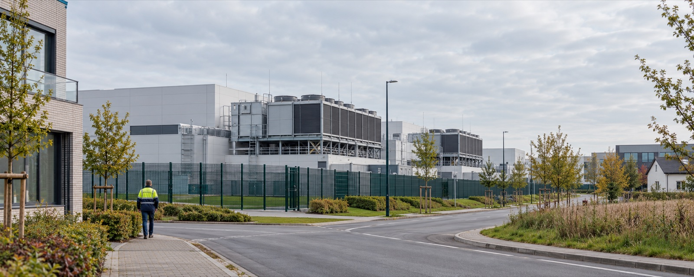

Applications
Environmental intelligence where decisions happen.
FerryWellCo combines local heat, fine particles, pollen and wind with timing, place and activity. GOTime is the product concept for walking and sport. Partner integrations, site analyses and portfolio views serve different teams and decisions.
GOTime · walking and outdoor sport
Plan outdoor activity with the conditions in view.
GOTime puts heat, PM2.5, pollen and wind next to a planned run, walk, ride or group session. People can compare times and routes, then understand the conditions behind the choice.

Athletes and outdoor sport
Compare possible training times and places with the heat and PM2.5 outlook visible alongside the session.
Walking and everyday movement
Make a walk easier to plan by seeing how the conditions differ between a morning route, an afternoon errand or a group outing.
Clubs and organised activity
Help organisers consider the conditions before setting a session and communicate the reasoning to participants.
Ground and site operations
A site analysis for people planning outdoor work.
Airport ground handling, construction, logistics, maintenance and agricultural fieldwork all involve demanding tasks outdoors. Our site-level analysis combines local heat and air-quality nowcasts and forecasts with the work schedule in a practical debrief.
The brief focuses on conditions, task windows and options that a site lead can discuss with the team. This is a distinct offering from GOTime.


Infrastructure and local environments
Environmental profiles around facilities.
For data centres and industrial campuses, we look at heat and PM2.5 conditions around the facility, its layout and operating context. The result is a spatial view that helps teams understand the local environment around a site.
Partner applications
Information for services people already use.
Environmental context can also be delivered through existing platforms and planning workflows.
Fitness and sport apps
Local exposure context and route comparisons inside running, cycling and outdoor activity services.
Wearables and mapping
Short, timely prompts on a watch or route screen, with heat, pollen, fine particles and wind in view.
Corporate wellness
Exposure-aware timing for employee movement goals, step challenges and group outdoor activities.
Insurance and digital health
Environmental exposure analysis for population health planning, occupational wellbeing and risk management.
Healthcare and occupational medicine
Environmental forecasts for capacity planning, outreach and prevention workflows.
Work with us